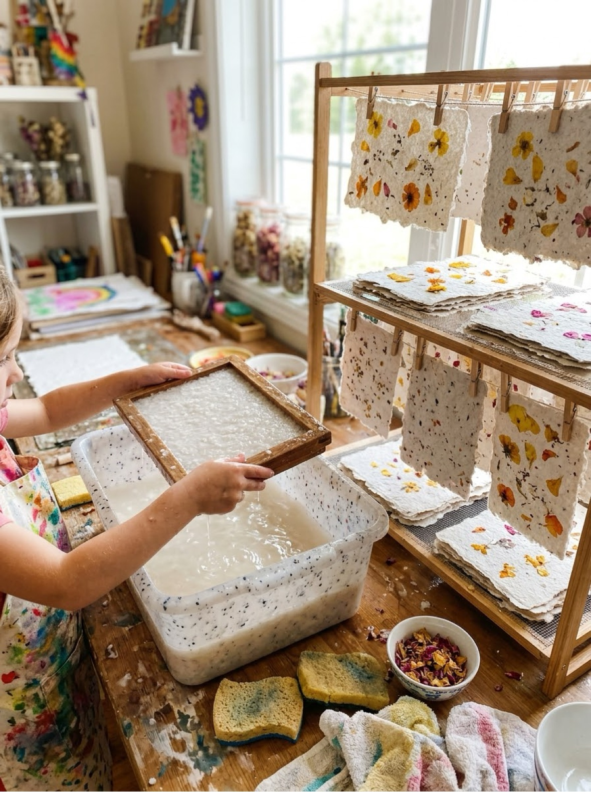
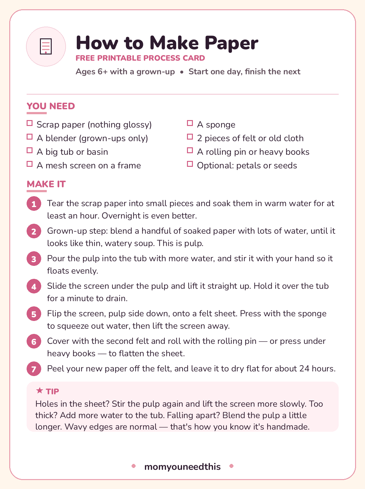

How to Make Paper Turn scrap paper into brand-new sheets — a real two-day project for ages 6+
Learning how to make paper at home sounds like alchemy, but it is really just four moves: soak scrap paper, blend it into pulp, lift a thin layer onto a screen, and press it dry. What comes out is thick, textured, unmistakably handmade paper — made, if you like, from your children's own outgrown drawings. It is a two-day project, because soaking and drying do most of the waiting, and it suits ages 6 and up with a grown-up on blender duty. The full method is below, with a printable process card for the table.
Last updated: October 21, 2026

Quick Answer
Tear scrap paper into small pieces and soak it in warm water for at least an hour — overnight is better. A grown-up blends handfuls of it with plenty of water into pulp, pours the pulp into a tub of water, and you slide a mesh screen under it and lift, catching a thin layer. Press the new sheet between felt sheets with a sponge and a rolling pin, then let it dry flat for about 24 hours. That is a sheet of paper you made yourself.
At a Glance
- Ages: 6+ with a grown-up (the blender step is adults only)
- What you get: the full paper-making method, troubleshooting, and a printable process card
- Time: about 30 minutes of active work, plus soaking and 24 hours of drying
- Cost: Free — it runs on scrap paper and water
🧺 What You Need — and What Actually Works
Paper making asks for a short list of equipment, but two items decide whether it works at all: the screen and the felt. The screen is a piece of fine mesh stretched on a frame — an old picture frame with window screen stapled firmly across it is the classic, and a flat mesh splatter screen from the kitchen works too. It needs to be smaller than your tub and bigger than the paper you want to make.
- Scrap paper (nothing glossy)
- A blender (grown-ups only)
- A big tub or basin
- A mesh screen on a frame
- A sponge
- 2 pieces of felt or old cloth
- A rolling pin or heavy books
- Optional: petals or seeds
Paper choices, briefly
Almost any paper recycles: old drawings, notebook pages, junk mail, the insides of envelopes. Two exceptions matter. Glossy paper — magazine covers, flyers with a shine — is coated and turns gummy instead of pulpy. And remove plastic envelope windows and staples before soaking; they do not blend and they do not belong in a sheet. A mix heavy on printed junk mail dries grayish; stir in some white or light-colored scraps and the sheets come out brighter. Nothing here needs to be bought — that is rather the point of the project.
📋 The Method, Step by Step
This is the full method, in the same words as the printable process card, so the paper on your table never disagrees with this page:
- Tear the scrap paper into small pieces and soak them in warm water for at least an hour. Overnight is even better.
- Grown-up step: blend a handful of soaked paper with lots of water, until it looks like thin, watery soup. This is pulp.
- Pour the pulp into the tub with more water, and stir it with your hand so it floats evenly.
- Slide the screen under the pulp and lift it straight up. Hold it over the tub for a minute to drain.
- Flip the screen, pulp side down, onto a felt sheet. Press with the sponge to squeeze out water, then lift the screen away.
- Cover with the second felt and roll with the rolling pin — or press under heavy books — to flatten the sheet.
- Peel your new paper off the felt, and leave it to dry flat for about 24 hours.

📄 Download Your Free Paper-Making Process Card
The materials and all seven steps on one sheet
⬇️ Download Free Process Card 🖨️ Print🎁 Free printable for ages 6+
🔍 Troubleshooting: Every First Batch Has One of These
Nobody's first sheet is perfect, and every failure below has a simple cause and a simple fix:
- Holes in the sheet: the pulp layer was uneven. Stir the tub again right before dipping, and lift the screen slowly and steadily.
- Sheet too thick and board-like: too much pulp in the tub. Add more water — the mix should look mostly like water with paper floating in it.
- Sheet falls apart: the pulp was not blended long enough, or the sheet was lifted too thin. Blend until there are no visible flakes, and let a little more pulp settle on the screen.
- Sheet sticks to the screen: not enough water was pressed out. Sponge-press thoroughly all over before peeling, and lift the screen away at one corner, slowly.
- Gray, dull paper: too much dark printed scrap in the mix. Balance it with white paper, or lean in and add a drop of food coloring or petals on purpose.
- Wavy, rippled edges: not a fault at all. That deckled edge is how everyone knows it is handmade.
🎨 Then What? Using Your Handmade Paper
Handmade paper is thick, thirsty and textured, and it has strong opinions about what it is for. It makes wonderful cards, gift tags and certificates — anything short, special and written with a marker or gel pen, which sit on the surface instead of bleeding the way fountain pen and watercolor will. Press petals or seeds into a sheet before the final rolling and you get paper that can be planted, which makes a genuinely lovely gift: the card becomes flowers.
What it is not for: long letters, printer paper, or anything that needs to fold crisply twenty times. Set those expectations and every sheet feels like a success. Many families keep a little production line going — a scrap basket in the art corner, a batch whenever it fills — and end up with a drawer of paper that carries its own history: last month's drawings, returned as this month's birthday cards.
📄 More Projects From Scratch
🎨 Crafts for Kids
The whole craft corner — seasonal card packs and projects by material. Visit the crafts hub.
🥣 Paper Mache Recipe
The other great use for a pile of scrap paper: two pastes and a full project method. Get the recipe.
✂️ Popsicle Stick Crafts
Five real builds for ages 4–8 — a frame, a feeder, a puzzle, a plane and a house. See the projects.
📚 Free Resources Hub
Every free printable, tool and activity on the site. Browse the hub.
❓ Frequently Asked Questions
What kind of paper can I use to make recycled paper?
Most everyday paper works: old drawings, notebook and printer paper, junk mail, paper bags and the insides of envelopes. Avoid glossy, coated paper — magazine covers and shiny flyers turn gummy instead of pulpy — and pick out plastic envelope windows and staples before soaking. A mix with plenty of white or light scraps dries the brightest.
Do I need a proper deckle and mould to make paper?
No. You need a flat piece of fine mesh held on a frame, and an old picture frame with window screen stapled tightly across it is the classic homemade version. A kitchen splatter screen also works. The frame just has to fit inside your tub with room to slide under the pulp.
How long does it take to make paper?
Once you know how to make paper, the active work takes about 30 minutes, spread across two days. The paper soaks for at least an hour (overnight is better), the lifting and pressing takes about 20 minutes, and the finished sheet dries flat for roughly 24 hours before you peel it off the felt.
Why did my handmade paper fall apart?
Almost always one of two reasons: the pulp was not blended long enough, so the fibers stayed in flakes instead of meshing together, or the layer lifted on the screen was too thin. Blend until the pulp looks like uniform, watery soup with no visible pieces, stir the tub right before each dip, and let a generous layer settle on the screen.
Can children do the blending step?
No — the blender is a grown-up step, every time. Children can do everything else: tearing, soaking, stirring the tub, lifting the screen (the best part), sponge-pressing, rolling and peeling the finished sheet. That division of labor is built into the steps on this page and on the process card.